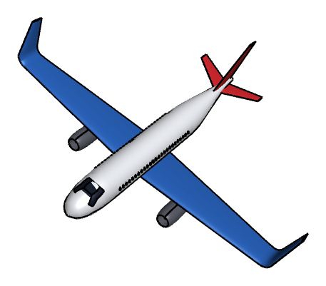
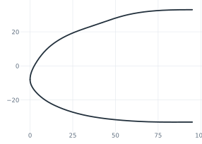
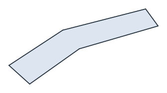
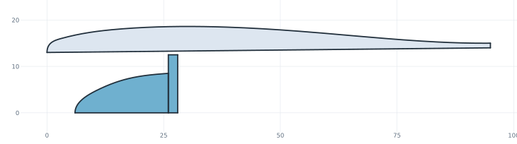
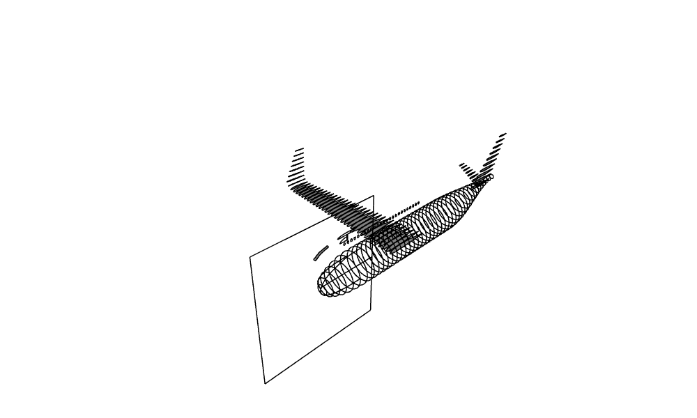
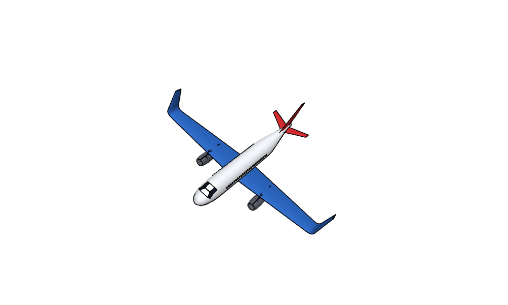
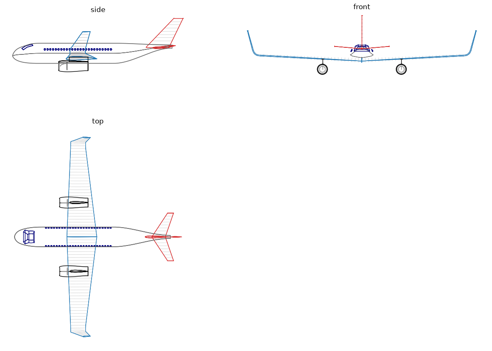

Toy plane: lofted fuselage, wings and engines
The example is a toy airliner, 520 long, with a span of 667 over its winglet tips. Every part starts as planex2d geometry on a construction plane: the fuselage frames and the nose profile, the NACA sections of the wing and the tail, the half sections of the engines. OpenCASCADE lofts, revolves and extrudes them into solids. Lengths are in cm, with the nose at the origin, x pointing aft and z up.

[1]:
import math
import matplotlib.pyplot as plt
import netgen.occ as occ
from ngsolve_webgpu.jupyter import Draw
import planex as px
Construction planes
The planes the parts are drawn on:
sideis the plane of symmetry, with h pointing aft and v up;the fuselage frames lie on
px.YZ, moved aft withOffset;the wing and tail sections lie on
side, turned about the x axis to the local slope of the span line and moved to their station;the pylons lie on
px.XY.
The left half is the right half mirrored about side.
[3]:
side = px.Plane(normal=(0, -1, 0), axis=(1, 0, 0))
def section_plane(leading_edge, phi):
return side.Rotated((0, 0, 0), (1, 0, 0), phi).Translated(leading_edge)
def mirrored(shape):
return shape.Mirror(side.ToOCCAxes())
Fuselage
The fuselage is L = 520 long, with a radius r = 33. Its nose, the first nose = 95, is designed as in a CAD sketcher: the crown and the chin are splines on the plane of symmetry, starting at the tip 8 below the axis, and the half width is a spline on px.XY (Figure 1).
[4]:
L = 520.0
r = 33.0
nose = 95.0
profile = px.QuickSketch(side)
profile.Move((0, -8)).Spline([(3, 1), (10, 10), (22, 18), (38, 24), (55, 29.5), (75, 32.5), (nose, r)],
tangents={0: (0, 1), 7: (1, 0)}, id="crown")
profile.Move((0, -8)).Spline([(4, -16), (14, -23), (30, -28.5), (50, -31.6), (72, -32.9), (nose, -r)],
tangents={0: (0, -1), 6: (1, 0)}, id="chin")
plan = px.QuickSketch(px.XY).Spline([(3, 9), (10, 17), (22, 23.5), (40, 28.5), (60, 31.6), (80, 32.8), (nose, r)],
tangents={0: (0, 1), 7: (1, 0)}, name="half width")
crown, chin, half_width = profile.Edge("crown"), profile.Edge("chin"), plan.Wire()

(a) Crown and chin on the plane of symmetry

(b) The half width on px.XY
Every frame is an ellipse through the three lines at its station. In the nose, read takes the height of a line with Intersections. Aft of the nose, the fuselage is a cylinder. From tail_start = 330 on, the top line drops by 6 and the bottom sweeps up to 17 above the axis along a smooth step, so the tail cone ends high and small.
[6]:
tail_start = 330.0
def step(u):
return 3 * u**2 - 2 * u**3
def read(curve, x, plane):
return curve.Intersections(px.Line((x, -100), (x, 100), plane=plane))[0].y
def lines(x):
if x < nose:
return read(crown, x, side), read(chin, x, side), read(half_width, x, px.XY)
u = min(max((x - tail_start) / (L - tail_start), 0.0), 1.0)
top, bottom = r - 6 * step(u), -r + (r + 17) * step(u)
return top, bottom, (top - bottom) / 2
def frame(x, n=48):
top, bottom, w = lines(x)
zc, h = (top + bottom) / 2, (top - bottom) / 2
points = [(w * math.cos(2 * math.pi * k / n), zc + h * math.sin(2 * math.pi * k / n)) for k in range(n)]
return px.Spline(points, periodic=True, plane=px.YZ.Offset(x))
One loft runs through all frames. They are denser towards the tip: eight in the nose, and one about every 12 aft of it.
[7]:
aft = round((L - nose) / 12)
stations = [0.05] + [nose * (i / 8) ** 1.5 for i in range(1, 8)] + [nose + (L - nose) * i / aft for i in range(aft + 1)]
frames = [frame(x) for x in stations]
fuselage = occ.ThruSections([f.ToOCCWire() for f in frames], solid=True)
print(len(frames), "frames")
44 frames
Cockpit and cabin windows
The windows are drawn on a plane parallel to the plane of symmetry, 50 beside it (Figure 2):
the windshield is an outline, extruded across the fuselage, and it splits the skin into the glass and the rest;
the cabin windows are 25 slots of 4 × 6, 9 apart, with their middle 13 above the axis. They are cut from a thin tube around the cabin, so they sit flush with the skin without touching the loft, and each slot cuts both sides.
[8]:
glass_plane = side.Translated((0, 50, 0))
windshield = (px.QuickSketch(glass_plane).Move((30, 16)).Line((43, 24.5)).Line((63, 29.6)).Line((66, 25.5))
.Line((47, 20)).Line((35, 11.5)).Close().Face())
shield_tool = windshield.ToOCCFace().Extrude(100)
shield, skin = fuselage * shield_tool, fuselage - shield_tool
row = px.QuickSketch(glass_plane)
for k in range(25):
row.Slot((105 + 9 * k, 12), (105 + 9 * k, 14), 4)
outside = occ.Cylinder(occ.Pnt(nose, 0, 0), occ.X, r + 0.3, tail_start - nose)
inside = occ.Cylinder(occ.Pnt(nose - 1, 0, 0), occ.X, r - 0.3, tail_start - nose + 2)
tube = outside - inside
windows = tube * row.Shape().ToOCCShape().Extrude(100)
print(len(windows.solids), "cabin windows")
50 cabin windows

(a) The windshield

(b) The cabin window slots
Wing
The wing uses NACA 2412 sections and sits low on the fuselage, with the root quarter chord at x = 200 and 18 below the axis. Its span line has three parts:
the wing itself,
b= 300 long, tapering from a chord ofc_root= 100 toc_tip= 50, with a dihedral of 3° and a washout of 3°;a bend of radius
R= 20 up to the winglet’s cant of 75°;the winglet,
hw= 60 long, swept back by 30° and tapering to a chord of 25.
The sections sit evenly along the span line, about 10 apart, so the loft stays smooth. section places a NACA section by its quarter chord, and station places the one at a distance s along the span line.
[10]:
b = 300.0
c_root = 100.0
c_tip = 50.0
R = 20.0
hw = 60.0
g, k = math.radians(3), math.radians(75)
bend = R * (k - g)
center = (b * math.cos(g) - R * math.sin(g), b * math.sin(g) + R * math.cos(g))
def section(code, quarter_chord, phi, c, twist=0.0):
x, y, z = quarter_chord
return px.FromNACA(code, chord=c, angle=-twist, plane=section_plane((x - c / 4, y, z), phi))
def loft(sections):
return occ.ThruSections([s.outer.ToOCCWire() for s in sections], solid=True)
def station(s):
if s <= b:
x, y, z, phi = 0, s * math.cos(g), s * math.sin(g), 3
c, twist = c_root + (c_tip - c_root) * s / b, 3 * s / b
elif s <= b + bend:
f = g + (s - b) / R
x, y, z, phi = 0, center[0] + R * math.sin(f), center[1] - R * math.cos(f), math.degrees(f)
c, twist = c_tip, 3
else:
h = s - b - bend
y0, z0 = center[0] + R * math.sin(k), center[1] - R * math.cos(k)
x, y, z, phi = h * math.tan(math.radians(30)), y0 + h * math.cos(k), z0 + h * math.sin(k), 75
c, twist = c_tip + (25 - c_tip) * h / hw, 3
return section("2412", (200 + x, y, -18 + z), phi, c, twist)
span_line = b + bend + hw
n = round(span_line / 10)
wing_sections = [station(span_line * i / n) for i in range(n + 1)]
wing = loft(wing_sections)
print(len(wing_sections), "wing sections")
40 wing sections
Tail
The tail has two lofts:
the stabilizer uses NACA 0012, with a chord from 45 to 20 over 80, swept by 30°, with 5° dihedral;
the fin uses NACA 0010, with a chord from 75 to 30 over a height of 95, swept by 40°. Its sections lie on horizontal planes, which are
sideturned by 90°.
[11]:
dh = math.radians(5)
stabilizer_sections = [section("0012", (470 + s * math.tan(math.radians(30)), s * math.cos(dh), 18 + s * math.sin(dh)),
5, 45 + (20 - 45) * s / 80)
for s in range(0, 81, 10)]
stabilizer = loft(stabilizer_sections)
fin_sections = [section("0010", (455 + h * math.tan(math.radians(40)), 0, 20 + h), 90, 75 + (30 - 75) * h / 95)
for h in (95 * i / 9 for i in range(10))]
fin = loft(fin_sections)
Engines
Two engines hang under the wing, y_e = 115 out from the axis, with their inlet at x_e = 150 and their axis 30 below the wing. Each is drawn as half sections on a plane through its axis (Figure 3):
the nacelle, 95 long, has a spline outside, at a radius of up to 18, and a straight duct of radius 13 inside, so it is hollow;
a spinner and a fan disc sit in the inlet;
the pylon is a NACA 0012 section from just behind the wing’s leading edge to the end of the nacelle.
The half sections are revolved about the engine axis, and the pylon is extruded up to the chord line of the wing.
[12]:
y_e = 115.0
x_e, z_e = 150.0, -18 + y_e * math.tan(g) - 30
def engine(y):
plane = side.Translated((x_e, y, z_e))
axis = occ.Axis((x_e, y, z_e), occ.X)
shell = px.QuickSketch(plane).Move((0, 13))
shell.Spline([(3, 16), (15, 18), (55, 17.5), (95, 15)], tangents={0: (0, 1)}, style="occ")
shell.Line((95, 14)).Line((0, 13))
spinner = px.QuickSketch(plane).Move((6, 0)).Spline([(10, 4.5), (18, 7.5), (26, 8.5)], tangents={0: (0, 1)})
spinner.Line((26, 0)).Close()
fan = px.QuickSketch(plane).Move((26, 0)).Line((28, 0)).Line((28, 12.5)).Line((26, 12.5)).Close()
base = z_e + 15
leading_edge = 200 - (c_root + (c_tip - c_root) * y / math.cos(g) / b) / 4
pylon = px.FromNACA("0012", chord=x_e + 95 - leading_edge - 5, plane=px.XY.Translated((leading_edge + 5, y, base)))
nacelle = shell.Face().ToOCCFace().Revolve(axis, 360)
hub = spinner.Face().ToOCCFace().Revolve(axis, 360) + fan.Face().ToOCCFace().Revolve(axis, 360)
return shell, spinner, fan, pylon, nacelle, hub, pylon.ToOCCFace().Extrude(-18 + y * math.tan(g) - base)
shell, spinner, fan, pylon_section, nacelle, hub, pylon = engine(y_e)

The skeleton
The first view shows all planex2d geometry in 3D, before anything is lofted: the plane of symmetry, the nose lines, the frames, the window outlines, the sections and the half sections.
[14]:
px.Plot3d([side, profile, plan, *frames, windshield, row, *wing_sections, *stabilizer_sections, *fin_sections, shell,
spinner, fan, pylon_section], plane_size=250)

The aircraft
Each part gets a color, and the wing, the stabilizer and the engines are mirrored to the left:
[15]:
colors = {"fuselage": (0.93, 0.94, 0.96), "glass": (0.08, 0.10, 0.16), "wing": (0.16, 0.38, 0.72),
"tail": (0.80, 0.16, 0.18), "engine": (0.35, 0.36, 0.40), "hub": (0.78, 0.78, 0.80)}
whole = [(skin, "fuselage"), (shield, "glass"), (windows, "glass"), (fin, "tail")]
halves = [(wing, "wing"), (stabilizer, "tail"), (nacelle, "engine"), (pylon, "engine"), (hub, "hub")]
colored = whole + halves + [(mirrored(shape), color) for shape, color in halves]
for shape, color in colored:
shape.faces.col = colors[color]
aircraft = occ.Compound([shape for shape, color in colored])
Draw(aircraft, euler_angles=[-42.22, 17.60, 52.29])

Three views
The three views show the edges of the solids in the colors of their parts, the sections in gray, and the outlines of the fuselage and the nacelles from the lines they are built from.

Numbers
The span runs from winglet tip to winglet tip, and the wing area is the trapezoid seen from above:
[17]:
tip = center[0] + R * math.sin(k) + hw * math.cos(k)
print("length", L, "span", round(2 * tip), "wing area", round((c_root + c_tip) * b * math.cos(g)))
length 520.0 span 667 wing area 44938